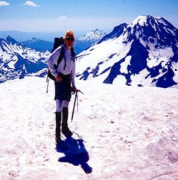
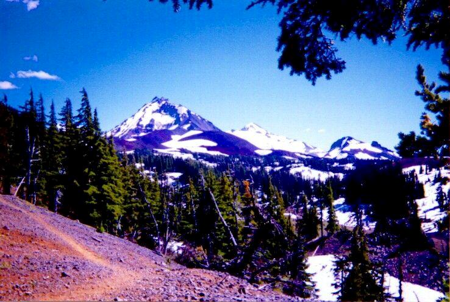
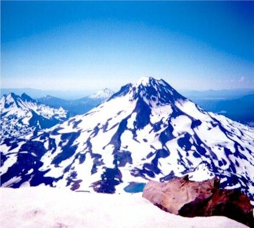

Middle Sister
This climb was my favorite wilderness event so far. Beautiful weather, sleeping under the stars, and the excitement of traveling solo made up for the miserable weather on the AAI trip. But I did have my share of drudgery, as I’ll tell you.
Kris was out of town, and I had a weekend to do something crazy, and to take my mind off of how much I missed her. I found I didn’t like being at home when she wasn’t there. Instead, I worked late, even playing basketball at midnight in the Intel parking lot (yes, we have a hoop). So I knew I was going to camp Saturday night, I just didn’t know where. I wanted to try a challenging climb that I could do solo, or a interesting backpacking trip. Middle Sister won because I knew the weather would be good, the difficulty seemed a grade higher than South Sister, and I didn’t feel familiar enough with the trails around Hood, Rainer or Adams to pick out a 2 day backpacking loop.
I got off to a late start Saturday, leaving town about 9:30. After a lunch in Sisters, I reached the Lava Camp and began walking at 1:30 PM. Lava Camp you say? Four miles north of the usual entrance, are you crazy you say? Well, my spur-of-the-moment “planning” revealed a major defect: In order to enter the wilderness at Obsidian Camp I would have had to get a special permit, only 20 available per day. Needless to say, I missed the chance, so the ranger suggested I try Lava Camp.
So I did, worried about the extreme length of the pack in and out. I hiked for hours, finally stopping just past Sawyer Bar, hopefully only a mile from the climber’s trail. By 7 PM, I was well ensconced in my camp, sleeping bag on Thermarest on tarp, with good faith that the weather would hold. As night fell, the wind picked up, forcing me to move to a more protected area on the leeward side of the hill. Oddly, the bothersome mosquitoes disappeared at dusk. I woke a few times, once after midnight to find the wind had utterly stopped, and the Milky Way reeling above. Shooting stars and satellites lulled me back to sleep. Tears came to my eyes as I contemplated the sky and my utter loneliness. In these moments, you can enter a magical portal and commune with the vast, lonely wildernesses of our planet, and others.
Anyhow, I woke rather late, and didn’t get on my way until 6 am. I ran and skipped to the climbers trail, crossing larger snowfields as I drew near Sunshine. I carried a stripped down pack, leaving unneeded equipment at my camp. At Sunshine, I filled water bottles at a spring-fed stream. I followed the footprints in the snow up the climber’s trail, ascending gradually. Where someone had kicked good steps, I climbed steep snow slopes, ice-ax a trusty companion.

As the snow became icier, I worried about reaching the summit because I didn’t have crampons. Also, my boots were 3/4 shank leather, great for the trail, but I felt their disadvantage in the snow. You can’t really get a good hold. When you kick, your foot skates over the surface leaving you off- balance and stressing the ankle/foot muscles. But I trudged on!
The sun came over North Sister, creating unbearable heat and slowing me down. The peak appeared, then disappeared behind the next rise. I reached the Renfrew Glacier after ascending three snowfields, each separated by a rock and scree covered ridge. Up close, tired, with polarizing glacier glasses on, these rocky sections high on the mountain really look like a scene from mars. I had fun pretending to be an astronaut, changing my breathing to simulate an oxygen tank! Yes, I can be very silly in the mountains, alas…
Crossing the glacier, I saw tiny fleas moving on the summit. Black flies slid down the slope straight ahead. As I approached, they grew arms, legs and voices. A party of 6-8 people, they said it was icy on the last steep snowfield, but a party of Mazamas had installed a fixed line, and there were good steps. I felt doubly backed-up, and continued on.
Here, lured by the map, I decided to ascent straight up the summit cone, rather than heading straight east to the ridge, then south. What a mistake! Near solid ice repelled my boots, and to avoid losing altitude I was forced to a scree slope on the left. Arrggh, what a nightmare! Take a step, take a step, cause a minor but alarming rock/gravel avalanche, nearly falling, heart pounding, take a step, ad infinitum! I burned at least 30 minutes in this evil place, wisely shunned by other climbers.
Finally, I escaped by reaching the rocky ridge-top, where the loose gravel had long since disappeared. I spoke to a man who expressed bemusement at the fixed lines above. I reached the tricky spot, where good steps and softening snow allowed me to ignore the rope, which was at that moment being removed. Who should I find at the top but a gaggle of Mazamas! I ran into Howard, from the Mt. St. Helens climb, and the amazing Katie Foehl, who was the leader. I said “Kathy!” (must be the lack of oxygen) in surprise, and after a beat she remembered me. We spoke for a few minutes, she expressing surprise that I was traveling alone, and parked so far away. With an admonishment to be safe, she and her party set off down the ridge, traveling northeast across the Hayden Glacier to Pole Creek Camp.

It was really fun to meet someone I knew, in fact, it kind of made my day through the dismal trudge home. Anyway, almost at the top I met a man and his circa 10 year old son, who was quite a trooper. They also headed down and east. Finally, I was there! It felt so good to walk on flat ground, and the view was breathtaking. South Sister, Broken Top and Mt. Bachelor to the south, Mt. Washington, Three-Fingered Jack, Jefferson and Hood to the north. No wind on the summit, just a ledge of snow, and a ledge of rock. Oh yes, and a handful of mice!
I ate lunch and chatted with two men who had come up on the south side, hiking on easy rock. They took my picture here. I had arrived at 11:00 am, and reluctantly turned around at 12:00 PM. Descending quickly, I stopped to put on snow pants, and began using any excuse to glissade. I had two or three wild rides, but mostly duds, where I sank in the snow and had to walk. I was back at Sunshine by 1:30. After filling my water bottles from the spring, I plodded back to camp, sinking exhausted on my sleeping bag. I ate and rested, but a contingent of ants lobbied for my emigration, so by 3:15 I was on my way, trying not to think of the 8 mile trek ahead of me.
Indeed it was long, and aside from a few moments appreciating the scenery, it was a torturous journey. Stopping for a rest only made my feet hurt more when I started again. I was quite amazed to reach the car at 7:30 PM.

There was a section north of South Matthieu Lake with a billion mosquitoes. Despite a hasty, violent application of bug spray, they still managed to give me numerous bites on my hands, knees, shoulders and face. Walking out, with their buzzing in my ear, I felt I was going mad, making sudden spasmodic motions to clear any away from my shoulders, where they poked through my shirt to reach fertile skin.
That, and a 3 hour drive back to Hillsboro, and boy…I’ve had a full weekend!